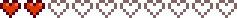
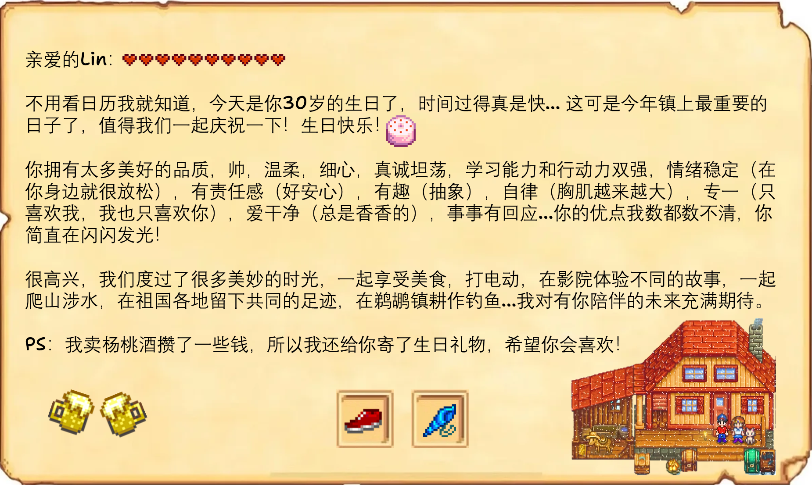

小林 (Lin)
“我挺喜欢现在的生活的，对未来我也充满希望。”
人物关系
居住情况：小林目前有两位室友，但由于工作或生活习惯的原因，他们经常不在家，这给了小林很多安静的个人空间。
好友：小林和小李是关系非常密切的朋友。他们几乎每天都会一起吃午饭和晚饭，下班后也习惯结伴回家。
日常活动：在闲暇时间，他们会联机打游戏，或者一起出门逛街、尝试各种美食，是生活中不可或缺的伙伴。
日程表
实习中：七点起床，五点半下班，一般十一点前后入睡。
礼物喜好
| 类型 | 内容 |
|---|---|
| 最爱 | 耳机、鼠标、键盘、跑鞋... |
| 喜欢 | 游戏、咖啡、盆栽、肯德基... |
| 一般 | 蛋糕、水果... |
| 讨厌 | 肝脏、生姜... |
电影喜好
| 分类 | 影片 |
|---|---|
| 最爱 | 《异形》 |
| 喜欢 | 《铁血战士》 |
| 不喜欢 | 《死神来了》 |
好感度事件
出门会随身携带纸巾，并在饭后或需要去卫生间时贴心递上。
会牢牢记住对方不喜欢的东西和对方喜欢的东西，还记得对方随口提过的想吃的餐厅。
性格温柔，情绪稳定，从来不乱发脾气，能够有效沟通。
约会时会提前做攻略，安排活动，学习能力强。
无抽烟喝酒等不良嗜好，有跑步习惯，健身，修炼胸肌中。
爱心事件
2心事件 · 2025.6.27

邀请他一起去看荷花时触发...
4心事件 · 2025.9.13

共同参加好友婚礼并独处时触发...
6心事件 · 2025.11.14

遇到考试节点陪伴全程时触发...
8心事件 · 2026.1.6

送出羽毛球花时关系升级...
相处习惯
1、生气时会发消息“我先走了”，但其实内心希望你和他一起走。
2、累了容易头疼，需要休息。
生日礼物
 跑鞋
跑鞋
想要的礼物
GPW猛男粉
重要照片
